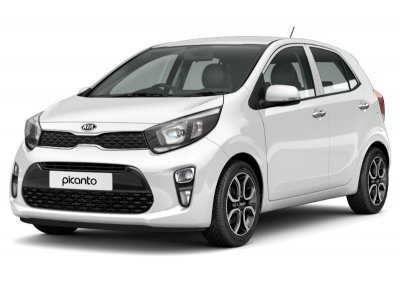

Actualités
Articles :
Le restylage du Volkswagen Tiguan surpris
Le Tiguan 2020 a été repéré comme le montre la photo partagée par le compte Instagram de la publication CocheSpias. Le Volkswagen Tiguan de deuxième génération est en vente depuis 2016, le modèle est donc en milieu de vie et un restylage devrait intervenir sous peu. La qualité de la photo n'est pas vraiment excellente, mais on peut facilement apprécier les changements que s’offrira le SUV de Wolfsburg à l’occasion de son restylage de mi-vie. Un restylage qui permet au Tiguan de se doter d’artifices inspirés de celui de la huitième génération de la Golf à l’image des nouveaux phares LED donnant au véhicule une allure plus moderne, du pare-chocs avant différent
